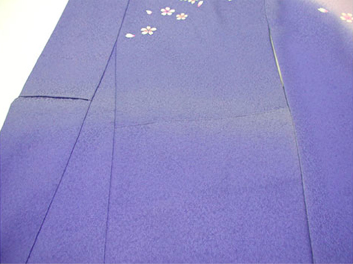
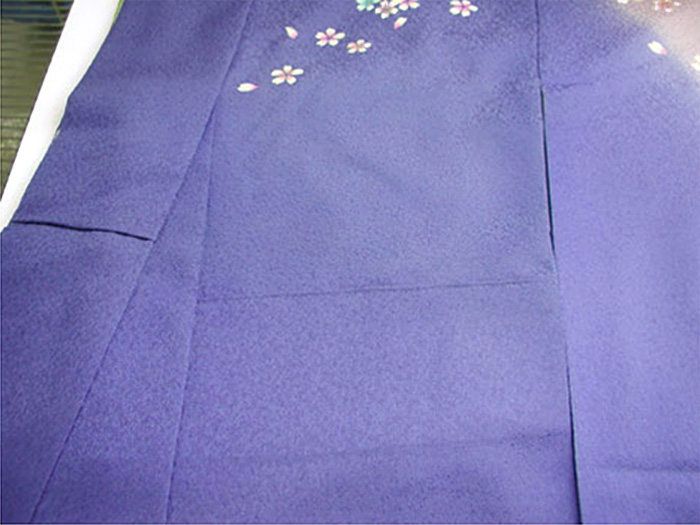
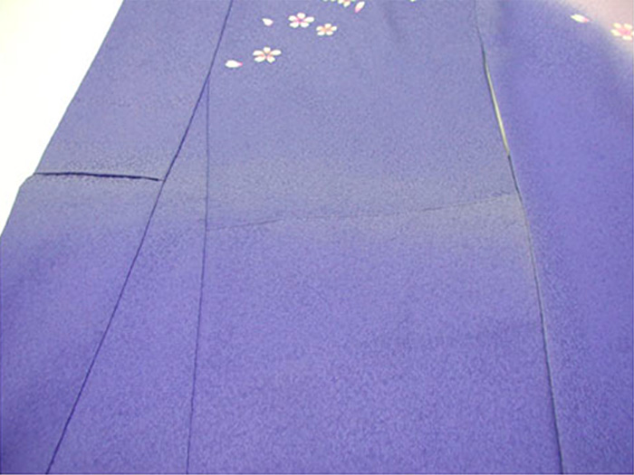
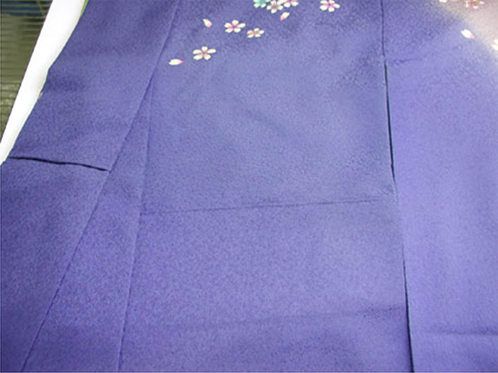

色ヤケは様々な理由が考えられます。ヤケは部分的な褪色であり、他の部分と色の濃淡の差が出てしまいます。
その部分を専門道具（ピースガン）を用いて色補正を行います。広範囲の色ヤケでも修正が可能です。
ヤケ直しの流れ
|  |  | |
| 大事なきものが退色 | 高度な色掛け技術で元通りに… |
色ヤケは様々な理由が考えられます。ヤケは部分的な褪色であり、他の部分と色の濃淡の差が出てしまいます。
その部分を専門道具（ピースガン）を用いて色補正を行います。広範囲の色ヤケでも修正が可能です。
|  |  | |
| 大事なきものが退色 | 高度な色掛け技術で元通りに… |